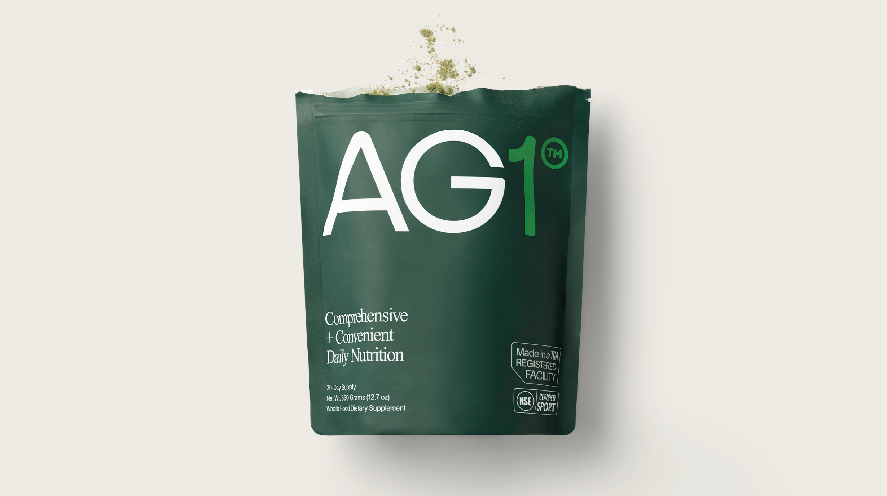

Ever since the iOS 14 update in 2021, it seems like the ability to track the customer journey accurately has gotten harder than ever.
The numbers e-commerce brand owners are looking at every morning are structurally designed to look better than they actually are, causing them to make decisions they ultimately regret in the future.
Let's say Meta Ads report higher than normal revenue and an extremely healthy return on ad spend. Based off of that assumption, the business should expand and pour more resources into scaling. This might mean bidding on more ads, testing more creative variants, and increasing the ad budget, all in the hopes of increasing sales.
Yet, little did they know their business's true return on ad spend was barely breaking even, and the number one channel to fix it all had been neglected for years. This situation is the reality of many e-commerce brands in 2026. They are left guessing on what to do because they can't trust their data. Businesses don't need more data. They need more clarity. And this project aims to show how that might be solved in the real world.
Every platform has its own unique way of tracking the sale of a customer.
Meta for example has a 7-day click attribution window and a 1-day view conversion, whereas Klaviyo has a 5-day window.
The reason this is a problem is simple.
If someone clicks an ad on Monday and buys on Thursday after opening a Klaviyo email, Meta counts that as a sale and so does Klaviyo. Two platforms are claiming credit for the same sale, despite the fact that money only changed hands once at the Shopify checkout.
When you add this up across thousands of orders over a month, this gap becomes impossible to ignore and silently kills whatever decision making power you once had.
$145k in revenue that never existed.
When comparing each channel's revenue to Shopify and reconciling how the inflated numbers should have been calculated, the results finally showed the real story.
| Source | Reported Revenue | Actual Revenue | Overclaim |
|---|---|---|---|
| Meta Ads | $246,224 | $131,351 | +87.5% |
| Klaviyo Email | $120,046 | $90,197 | +33.1% |
Meta was overclaiming by 87.5% of what was actually true, while Klaviyo was doing it by 33%. The platforms were claiming $145k in revenue that Shopify never recorded. This inflation prevents businesses from making informed decisions and scaling in a way that is sustainable.
The ROAS that looked so good on Monday morning was entirely wrong. Meta reported 1.86, yet the true ROAS, calculated by taking the actual Shopify revenue and dividing it by actual Meta spend, was barely breaking even at 0.99.
The business spent $132k to make $131k back. This is before creative costs, agency fees, and any other overhead expenses a typical business has to deal with daily. Meaning they are actively losing money all while being blind to its effects until it is too late.
As bad as this looks, there is a silver lining.
Email drove $90k in revenue with zero ad spend. That is the most profitable channel in the entire business. And it had been overlooked the whole time.
The reason is simple. Email looks smaller in the dashboard because Klaviyo's attribution window is shorter, meaning there is no ad spend to inflate the numbers. Paid social looks bigger because Meta is claiming credit for everything within a 7-day window. So the budget follows the bigger number every single month. Businesses believe they are profitable, so they invest more in ad spend and less on email, making the same poor decision on wrong data.
| Channel | Actual Revenue | Ad Spend | True ROAS |
|---|---|---|---|
| Paid Social | $131,351 | $132,665 | 0.99 |
| $90,197 | $0 | ∞ | |
| Organic Search | $63,851 | $0 | ∞ |
| Direct | $42,649 | $0 | ∞ |
The fix is not simple. But it is possible.
Shopify should be the only source of truth for revenue. Every reported number from every platform should be reconciled against what Shopify actually recorded before any budget decision gets made.
In practice that means pulling raw order data from Shopify, ad spend from Meta, and campaign data from Klaviyo into a single place where the numbers can be compared side by side. Not in a spreadsheet that someone updates on Monday morning. In a pipeline that runs automatically and flags the gap before it influences a decision.
That is what this project builds.
The data in this project is synthetic, built to simulate the real conditions a DTC brand analyst would face. It does not reflect the full complexity of a real production environment, but it does reflect a real problem that e-commerce brands are dealing with today.
The dataset includes real data quality issues you would find in any brand export. 116 duplicate order IDs, null emails, future dated transactions. The same problems that exist inside every real brand export before anyone has touched it. Because you cannot learn how to handle messy data by only ever working with clean data.
From there I built a three layer dbt pipeline on BigQuery. Staging models cleaned each raw source. An intermediate model removed the duplicates and standardized the channel labels so everything spoke the same language. Mart models put the true numbers and the platform reported numbers side by side so the gap became impossible to ignore.
The dbt tests caught all 116 duplicate order IDs before they ever touched an aggregation. That matters because duplicate orders are one of the main mechanisms behind revenue overcounting in real production pipelines. Most brands have no tests running on their data, which means most brands have no idea when their numbers start lying.
This project shows what happens when someone actually checks.
Data used in this analysis is synthetic and inspired by AG1's product catalog. All findings are for portfolio purposes only.
The models, the tests, the lineage — all of it.